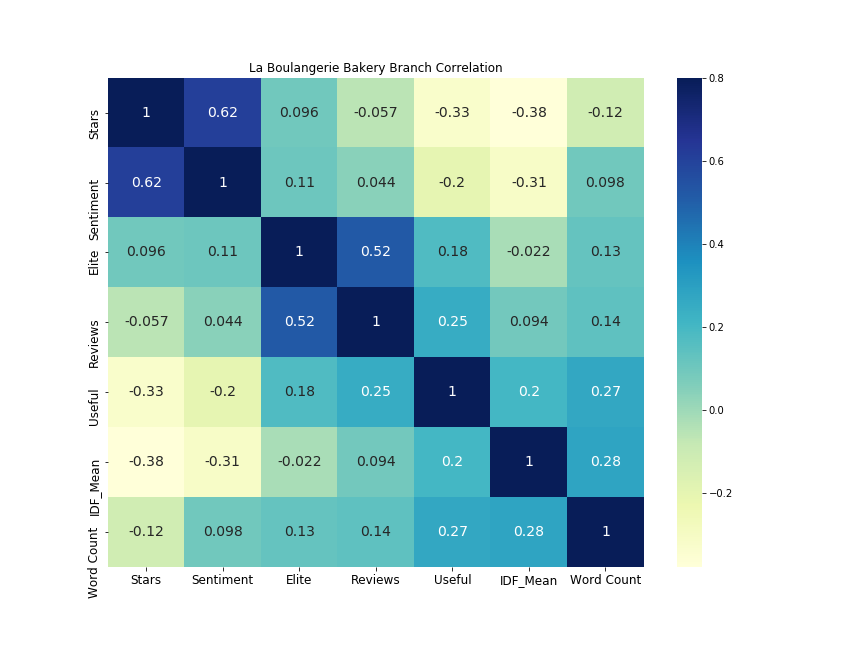

Yelp Quality Heatmap

Over the course of our web scraping, NLP (natural language processing), and sentiment analysis we were able to obtain and produce many numerical pieces of data dealing with Yelp reviews. In order to aid in data exploration and show more subtle patterns in the data, we generated this heatmap showcasing some of the more interesting points. Here you can observe correlations such as the 0.62 relationship between user assigned 'stars' and the sentiment detected using sentiment analysis. You can also see that Elite Yelp users tend to be more accurate on the platform showing a 0.52 correlation with total user reviews.
In a more exploratory sense, you can also see something interesting if you look more closely at the 'Useful' column. Yelp users have the option of marking a review as 'Useful' if they found it to be so. You can see an interesting slightly positive relationship on the heatmap between this 'Useful' and 'Word Count' (how long the review is). Users are more likely to find longer reviews useful. Another interesting relationship is that between 'Useful' and 'Stars', though this relationship is negative. Users seem to be more likely to find critical reviews useful when using the Yelp platform.